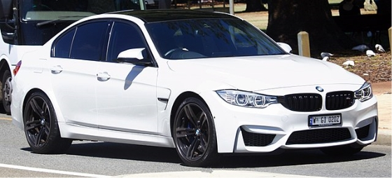
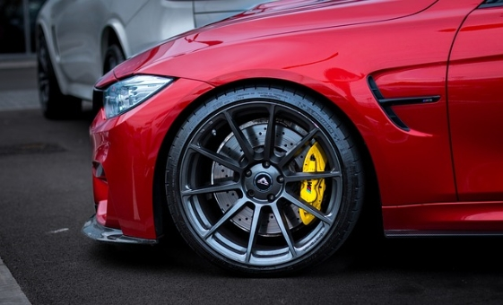

M3 - F80 Sedan (2012 to present)

BMW produced the F80 M3 starting at the 2014 model year (2015 for the US), introducing it as only a saloon following the company's plans to split off the BMW 4 Series coupe/convertible from the BMW 3 Series.
Unlike its E90 M3 saloon predecessor, but similar to that generation's E92 coupe, the F80 M3 features a carbon fibre roof and driveshaft.
The performance of the car has improved from the previous generation. The 7-speed M-DCT transmission accelerates the car from 0 to 100 km/h (62 mph) in 4.1 seconds). The 6-speed manual transmission does 0 to 100 km/h (62 mph) in 4.3 seconds).
The M3 and M4 run the standing kilometer in 22.20 seconds. This is a comparable time to the 2006 Corvette Z06, which took 22.24s to accomplish the same.
Top speed is limited to 155 mph (249 km/h) but an optional M Driver's package raises this to 174 mph (280 km/h). The new engine generates up to 425 hp (431 PS; 317 kW) between 5,500 and 7,300 rpm and up to 406 lb-ft (550 N·m) of torque between 1,850 and 5,500 rpm.
.jpg)
